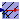

Prescribed temperature
This model defines a fixed temperature T at its port in Kelvin, i.e., it defines a fixed temperature as a boundary condition.
| Type | Name | Default | Description |
|---|---|---|---|
| Temperature | T | 0 | Fixed temperature at port if useTemperatureInput=false [K] |
| External inputs/outputs | |||
| Boolean | useTemperatureInput | false | =true, if fixed temperature is from input instead of parameter |
| Equilibrium | |||
| Simulation | |||
| Boolean | isIsolatedInSteadyState | false | =true, if there is no flow at port in steady state |
| SimulationType | Simulation | Types.SimulationType.NormalI... | If in equilibrium, then zero-flow equation is added. |
| Type | Name | Description |
|---|---|---|
| HeatPort_b | port | |
| input TemperatureInput | temperature | [K] |
2009-2010
Marek Matejak, Charles University, Prague, Czech Republic
Extends from Modelica.Icons.SourcesPackage (Icon for packages containing sources).
| Name | Description |
|---|---|
|  UnlimitedHeat | Prescribed temperature |
| MassOutflow | One-directional outflow of heated mass with enthalpy (vaporization heat) |
| One-directional inflow of heated mass with enthalpy (heat of solvation) |
 Physiolibrary.Thermal.Sources.MassOutflow
Physiolibrary.Thermal.Sources.MassOutflow
One-directional outflow of heated mass with enthalpy (vaporization heat)

Extends from Interfaces.ConditionalMassFlow (Input of mass flow vs. parametric mass flow).
| Type | Name | Default | Description |
|---|---|---|---|
| MassFlowRate | MassFlow | 0 | Mass flow if useMassFlowInput=false [kg/s] |
| SpecificEnergy | VaporizationHeat | 0 | Used for whole outflow stream [J/kg] |
| SpecificHeatCapacity | SpecificHeat | 4186.8 | Of outflowing medium [J/(kg.K)] |
| External inputs/outputs | |||
| Boolean | useMassFlowInput | false | =true, if mass flow input is used instead of parameter MassFlow |
| Type | Name | Description |
|---|---|---|
| input MassFlowRateInput | massFlow | [kg/s] |
| HeatPort_a | q_in | flow circuit |
2009-2010
Marek Matejak, Charles University, Prague, Czech Republic
 Physiolibrary.Thermal.Sources.MassInflow
Physiolibrary.Thermal.Sources.MassInflow
One-directional inflow of heated mass with enthalpy (heat of solvation)

Extends from Interfaces.ConditionalMassFlow (Input of mass flow vs. parametric mass flow), Interfaces.ConditionalTemperature (Input of temperature vs. parametric temperature).
| Type | Name | Default | Description |
|---|---|---|---|
| MassFlowRate | MassFlow | 0 | Mass flow if useMassFlowInput=false [kg/s] |
| Temperature | T | 0 | Temperature if useTemperatureInput=false [K] |
| SpecificEnergy | dH | 0 | Enthalpy of incomming substance (i.e. enthalpy of solvation) [J/kg] |
| SpecificHeatCapacity | SpecificHeat | 4186.8 | Of inflowing medium [J/(kg.K)] |
| External inputs/outputs | |||
| Boolean | useMassFlowInput | false | =true, if mass flow input is used instead of parameter MassFlow |
| Boolean | useTemperatureInput | false | =true, if temperature input is used instead of parameter T |
| Type | Name | Description |
|---|---|---|
| input MassFlowRateInput | massFlow | [kg/s] |
| input TemperatureInput | t | [K] |
| HeatPort_b | q_out | flow circuit |
2014
Marek Matejak, Charles University, Prague, Czech Republic